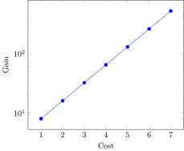

PGFPlots manual gallery
Examples converted from the PGFPlots manual gallery. This is a work in progress.
Cost Error
@pgf Axis(
{
xlabel = "Cost",
ylabel = "Error",
},
Plot(
{
color = "red",
mark = "x"
},
Coordinates(
[
(2, -2.8559703),
(3, -3.5301677),
(4, -4.3050655),
(5, -5.1413136),
(6, -6.0322865),
(7, -6.9675052),
(8, -7.9377747),
]
),
),
)
Simple Expression
using LaTeXStrings
@pgf Axis(
{
xlabel = L"x",
ylabel = L"f(x) = x^2 - x + 4"
},
Plot(
Expression("x^2 - x + 4")
)
)
Mixing expression and coordinates
@pgf Axis(
{
height = "9cm",
width = "9cm",
grid = "major",
},
PlotInc(Expression("-x^5 - 242")),
LegendEntry("model"),
PlotInc(Coordinates(
[
(-4.77778,2027.60977),
(-3.55556,347.84069),
(-2.33333,22.58953),
(-1.11111,-493.50066),
(0.11111,46.66082),
(1.33333,-205.56286),
(2.55556,-341.40638),
(3.77778,-1169.24780),
(5.00000,-3269.56775),
]
)),
LegendEntry("estimate")
)
Log logLog
@pgf LogLogAxis(
{
xlabel = "Cost",
ylabel = "Gain"
},
Plot(
{
color = "red",
mark = "x"
},
Coordinates(
[
(10, 100),
(20, 150),
(40, 225),
(80, 340),
(160, 510),
(320, 765),
(640, 1150),
]
)
)
)
Yaxis log
@pgf Axis(
{
xlabel = "Cost",
ylabel = "Gain",
ymode = "log",
},
Plot(
{
color = "blue",
mark = "*"
},
Coordinates(
[
(1, 8)
(2, 16)
(3, 32)
(4, 64)
(5, 128)
(6, 256)
(7, 512)
]
)
)
)
Dof vs error
using LaTeXStrings
@pgf Axis(
{
xlabel = "Degrees of freedom",
ylabel = L"$L_2$ Error",
xmode = "log",
ymode = "log",
},
Plot(Coordinates(
[( 5, 8.312e-02), ( 17, 2.547e-02), ( 49, 7.407e-03),
( 129, 2.102e-03), ( 321, 5.874e-04), ( 769, 1.623e-04),
(1793, 4.442e-05), (4097, 1.207e-05), (9217, 3.261e-06),]
)),
Plot(Coordinates(
[( 7, 8.472e-02), ( 31, 3.044e-02), (111, 1.022e-02),
( 351, 3.303e-03), ( 1023, 1.039e-03), (2815, 3.196e-04),
(7423, 9.658e-05), (18943, 2.873e-05), (47103, 8.437e-06),]
)),
Plot(Coordinates(
[( 9, 7.881e-02), ( 49, 3.243e-02), ( 209, 1.232e-02),
( 769, 4.454e-03), ( 2561, 1.551e-03), ( 7937, 5.236e-04),
(23297, 1.723e-04), (65537, 5.545e-05), (178177, 1.751e-05),]
)),
Plot(Coordinates(
[( 11, 6.887e-02), ( 71, 3.177e-02), ( 351, 1.341e-02),
( 1471, 5.334e-03), ( 5503, 2.027e-03), ( 18943, 7.415e-04),
(61183, 2.628e-04), (187903, 9.063e-05), (553983, 3.053e-05),]
)),
Plot(Coordinates(
[( 13, 5.755e-02), ( 97, 2.925e-02), ( 545, 1.351e-02),
( 2561, 5.842e-03), ( 10625, 2.397e-03), ( 40193, 9.414e-04),
(141569, 3.564e-04), (471041, 1.308e-04), (1496065, 4.670e-05),]
))
)
Scatter classes
@pgf Axis(
{
"scatter/classes" = {
a = {mark = "square*", "blue"},
b = {mark = "triangle*", "red"},
c = {mark = "o", draw = "black"},
}
},
Plot(
{
scatter,
"only marks",
"scatter src" = "explicit symbolic",
},
Table(
{
meta = "label"
},
x = [0.1, 0.45, 0.02, 0.06, 0.9 , 0.5 , 0.85, 0.12, 0.73, 0.53, 0.76, 0.55],
y = [0.15, 0.27, 0.17, 0.1, 0.5, 0.3, 0.52, 0.05, 0.45, 0.25, 0.5, 0.32],
label = ["a", "c", "a", "a", "b", "c", "b", "a", "b", "c", "b", "c"],
)
)
)
Splines
@pgf Axis(
{
"nodes near coords" = raw"(\coordindex)",
title = raw"\texttt{patch type=quadratic spline}",
},
Plot(
{
mark = "*",
patch,
mesh, # without mesh, pgfplots tries to fill,
# "patch type" = "quadratic spline", <- Should work??
},
Coordinates(
[
# left, right, middle-> first segment
(0, 0), (1, 1), (0.5, 0.5^2),
# left, right, middle-> second segment
(1.2, 1), (2.2, 1), (1.7, 2),
]
)
)
)
Mesh scatter
@pgf Plot3(
{
mesh,
scatter,
samples = 10,
domain = "0:1"
},
Expression("x * (1-x) * y * (1-y)")
)
Group plot
# this is an imitation of the figure in the manual, as we generate the data
x = linspace(0, 10, 100)
@pgf plot = Plot({very_thick}, Table(x = x, y = @. (sin(x * 8) + 1) * 4 * x))
@pgf GroupPlot(
{
group_style =
{
group_size="2 by 2",
horizontal_sep="0pt",
vertical_sep="0pt",
xticklabels_at="edge bottom"
},
xmin = 0,
ymin = 0,
height = "3.7cm",
width = "4cm",
no_markers
},
nothing,
{xmin=5, xmax=10, ymin=50, ymax=100},
plot,
{xmax=5, ymax=50},
plot,
{xmin=5, xmax=10, ymax=50, yticklabels={}},
plot)
Patch
@pgf Axis(Plot(
{
patch,
"table/row sep" = raw"\\",
patch_table = TableData([0 1 2;
1 2 3;
4 3 5])
},
Table(
{
point_meta = raw"\thisrow{c}"
},
:x => [0, 1, 2, 3, 2, 4],
:y => [0, 1, 0, 1, 0, 0],
:c => [0.2, 0, 1, 0, 0.5, 0.5])))